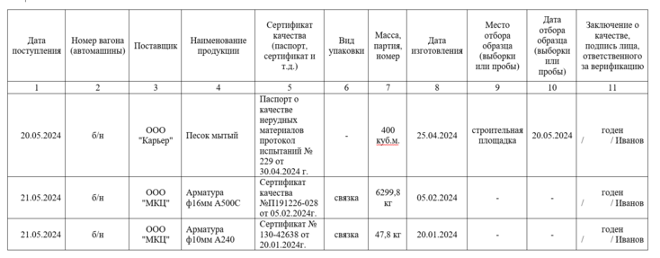

Секреты качественного журнала и актов входного контроля

Журнал входного контроля (ЖВК) материалов обеспечивает их качество. В нем фиксируются все этапы приемки строительных ресурсов: от проверки их соответствия стандартам до выявления возможных дефектов. Корректное ведение журнала помогает соблюдать нормативные требования и снижает риски использования некачественных материалов. Это напрямую влияет на долговечность и безопасность объекта.
Когда и кто ведет ЖВК материалов
У ЖВК три цели:
- проверить соответствие материалов проектной документации и нормативам
- выявить дефекты, повреждения или отклонения от заявленных характеристик
- принять решение о допуске материалов к использованию или необходимости замены
ЖВК ведут при выполнении любого вида работ, если там используют материалы, изделия, конструкции, оборудование. ЖВК заполняют по результатам проведенного входного контроля.
Входной контроль строительных материалов, изделий, конструкций и оборудования — это одно из контрольных мероприятий строительного контроля. Оно обеспечивает соответствие всех элементов строительства установленным стандартам, проектным требованиям и нормативной документации.
Материал к уроку (PDF)
Задачи застройщика, техзаказчика и лица, осуществляющего строительство при входном контроле материалов
PDF получен с исходной страницы. Поля для названия организации и других персональных данных оставлены пустыми.
Входной контроль материалов, изделий, конструкций, полуфабрикатов и оборудования проводит лицо, которое осуществляет строительство, — подрядчик. Заказчик проверяет полноту и соблюдение сроков выполнения подрядчиком входного контроля и достоверности документирования его результатов (п. 6 постановления Правительства от 21.06.2010 № 468). Журнал входного контроля заполняет тоже подрядчик.
Какой порядок ведения журнала входного контроля материалов
Существуют две формы журнала входного контроля материалов: приложение И к СП 48.13330.2019 и приложение А к ГОСТ 24297-2013. Нормы не устанавливают, какую конкретно форму использовать. Чаще пользуются формой из приложения И к СП 48.13330.2019.
Журнал можно вести на бумажном носителе или в электронной форме без дублирования на бумажном носителе. Электронный журнал в формате xml подписывают электронной подписью. Журнал на бумажном носителе пронумеруйте, прошейте и скрепите печатью. Распечатать форму журнала можно самостоятельно.
Следите, чтобы бланк соответствовал установленному образцу. Часто в магазинах можно встретить неправильные или устаревшие формы.
Как заполнять ЖВК по форме из СП 48.13330.2019
Следите, чтобы дата доставки продукции была не позже даты начала работ с этими материалами по общему журналу работ.
Пример. Как оформить доставку щебня
Если в ОЖР написано, что устройство основания из щебня начали производить 04.02.2024, доставка щебня на объект должна быть не позднее 04.02.2024. Например, 02.02.2024.
Название продукции должно соответствовать его названию в рабочей документации.
Количество продукции должно соответствовать проектным и сметным значениям. Оно может быть больше, но не меньше. Если по рабочей документации необходимо 5 куб. м бетона, в журнале должно быть указано не менее 5 куб. м бетона. Исключения — случаи, когда по факту потребовалось меньше материалов. Но тогда в актах выполненных работ также надо прописать меньшее количество. Может быть несколько поставок одного и того же материала. Например, в проекте заложено 1000 м кабеля, но в журнале входного контроля может быть записано: первая поставка — 200 м, вторая — 500 м, третья — 300 м. В сумме — 1000 м.
Наименование поставщика должно совпадать с данными из сопроводительной документации.
В столбце 8 укажите, надо ли проводить лабораторный контроль.
Материал к уроку (PDF)
Когда проводят инструментальный контроль
PDF получен с исходной страницы. Поля для названия организации и других персональных данных оставлены пустыми.
Столбец 9 заполняйте так, если проводили лабораторный контроль:
- «годен/не годен»;
- прописывайте конкретный результат контроля, например: «осадка конуса бетонной смеси»;
- указывайте номера актов, протоколов испытаний.

Как заполнять журнал по форме из приложения А к ГОСТ 24297-2013
Дата поступления продукции должна быть не позже даты начала работ с применением данного материала по общему журналу работ. Если в ОЖР написано, что устройство основания из щебня начали производить 04.02.2024, то доставка щебня на объект должна быть не позднее 04.04.2024. Например, 02.02.2024.
Номер вагона, автомашины можно указать в документе качества на продукцию. Наименование поставщика должно совпадать с данными из сопроводительной документации. Возможные виды упаковок: мешок, кипа, бочка, бутылка, ящик, контейнер, коробка, обрешетка, ящик, барабан, канистра, туба, лоток, поддон, связка.
В столбце «Масса, партия, номер» укажите количество продукции, номер партии из паспорта. Количество продукции должно соответствовать проектным и сметным значениям. Оно может быть больше, но не меньше. Если по рабочей документации необходимо 5 куб. м бетона, в журнале должно быть указано не менее 5 куб. м бетона. Исключения — случаи, когда по факту потребовалось меньше материалов. Но тогда в актах выполненных работ также надо прописать меньшее количество.
Обратите внимание, что один материал могут привозить несколько раз. Может быть несколько поставок одного и того же материала. Например, в проекте заложено 1000 м. кабеля, но в журнале входного контроля может быть записано: первая поставка — 200 м, вторая — 500 м, третья — 300 м. В сумме — 1000 м.
Дату изготовления берите из документа качества — паспорта. Столбцы 9 и 10 заполняют, если необходимо проводить лабораторные испытания. Подписывает строки журнала уполномоченный представитель подрядчика. Его назначают соответствующим приказом.

Теперь проверим ваши знания по теме урока. Ниже представлен тест, в котором всего пять вопросов. Выберите вариант ответа и система определит правильность вашего выбора.
Встроенное упражнение — сохранен текст
Статическое представление
TestCards
Текстовые фрагменты упражнения извлечены с исходной встроенной страницы. Проверка ответов и анимация здесь не работают.
- Журнал и акты входного контроля
- Кто ответственный за проведение входного контроля на площадке по действующему законодательству?
- Подрядчик
- Заказчик
- Поставщик
- Что НЕ входит в рамки входного контроля?
- Проверка наличия и содержания сопроводительной документации
- Проверка продукции и ее упаковки на соответствие
- Проверка правил складирования продукции
- Может ли сертификат соответствия заменить документ изготовителя о качестве?
- Какой нормативный правовой акт устанавливает перечень продукции, подлежащий обязательной сертификации (т.е. когда обязательно должен быть сертификат соответствия)?
- Решение Комиссии таможенного союза от 28.05.2010 № 299
- Постановление Правительства от 23.12.2021 г. № 2425
- Распоряжение Правительства РФ от 29.12.2020 № 3646-р
- Где приведена форма журнала входного контроля?
- Приказ Минстроя 1026/пр от 02.12.2022